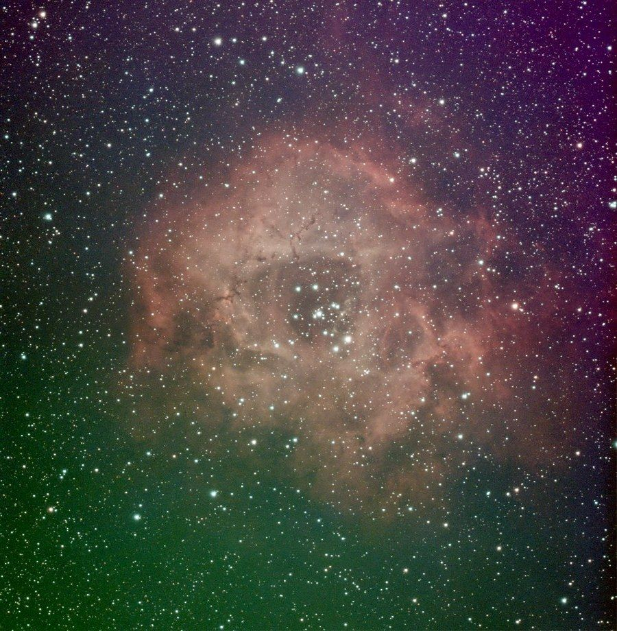
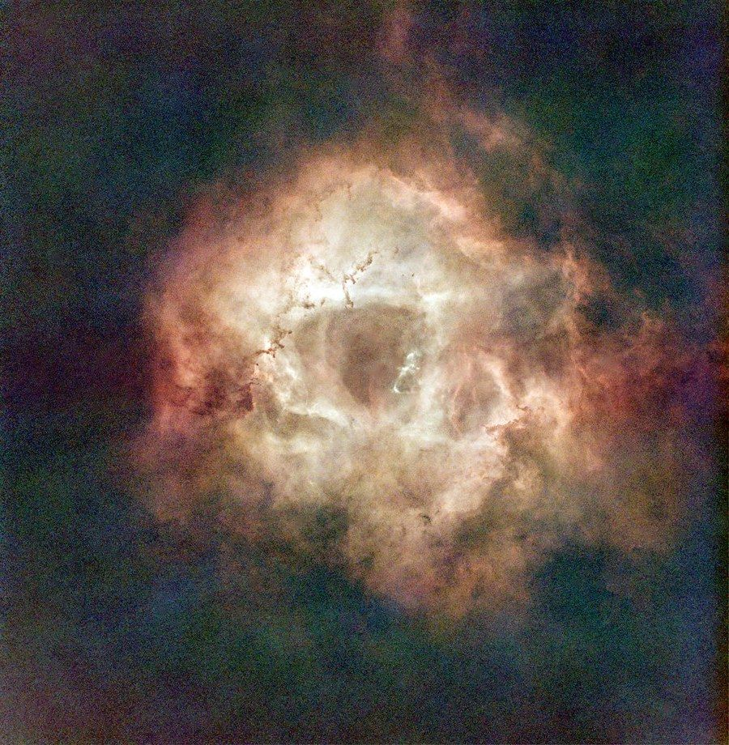
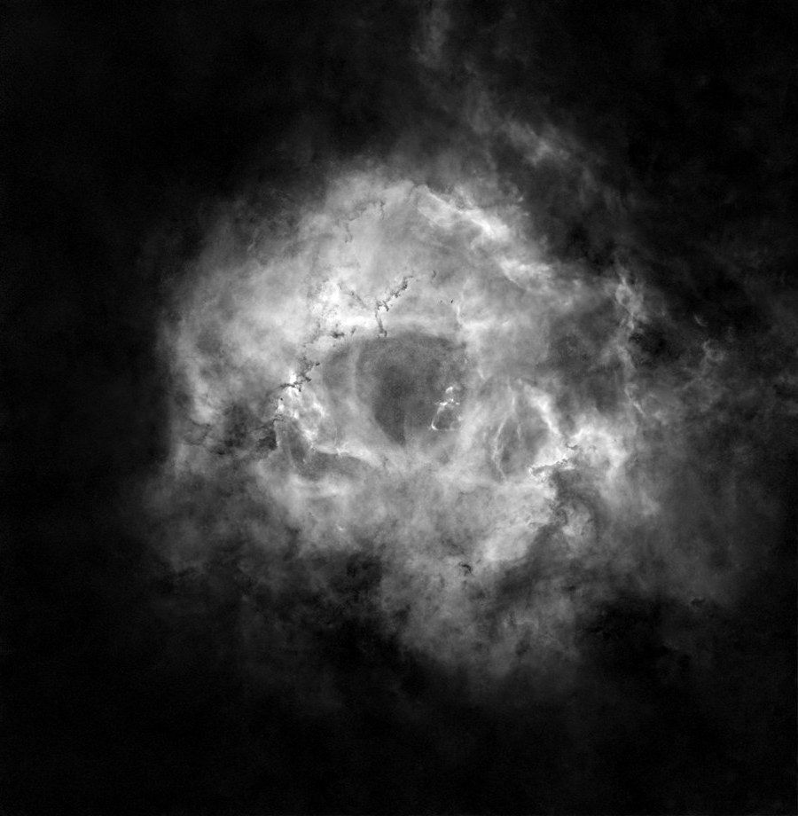
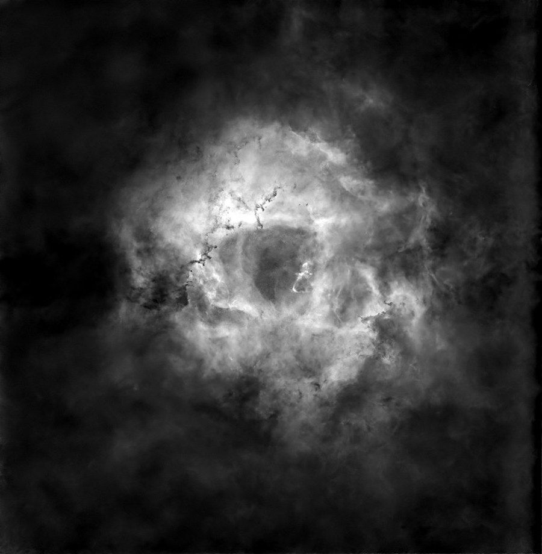
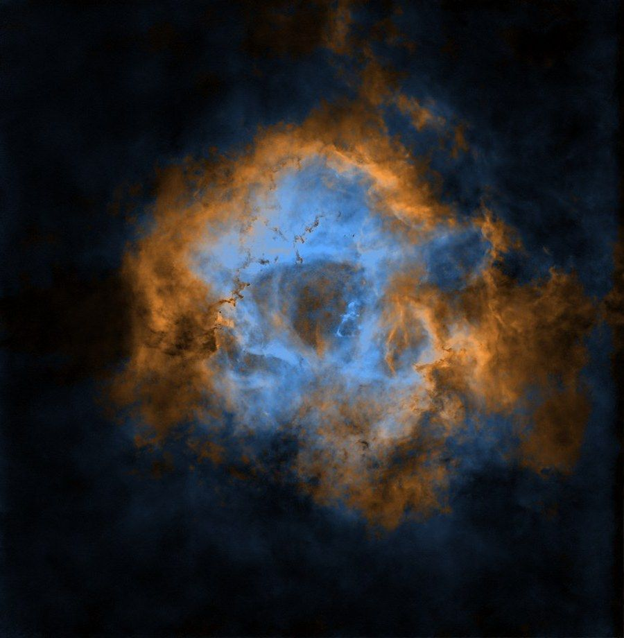

Як я зробив Розетку в палітрі, натхненній «Хабблом» (AstroBin, ревізія D), з 30-мм смарт-телескопа на міському балконі. Усі числа нижче це налаштування, реально використані на цьому знімку. Лінійний стек тут, можна пройти всі кроки на тих самих даних.
Дані: DWARF Mini у режимі EQ, вбудований дуобенд-фільтр, gain 80, мозаїка з 2 панелей, кадри по 60 с за 10 ночей. Панель 1: 731 кадр (12,2 год), панель 2: 684 кадри (11,4 год), разом 23,6 год. Кожна частина зображення має приблизно половину цього часу, обидві панелі є лише в зоні перекриття.
Розкриття: що оброблено нейромережами, а що ні
- Використані нейромережеві інструменти: BlurXTerminator (деконволюція), StarXTerminator (видалення зір), NoiseXTerminator (шумодав) і зняття фону в GraXpert, яке в режимі CLI працює на власній ШІ-моделі. Вони змінюють деталізацію, шум і зорі, але не додають об'єктів.
- Генеративного ШІ немає. Нічого не згенеровано і не домальовано. Крок кольору (hubble_map.py) це звичайне математичне перетворення двох виміряних каналів, усі формули в коді.
- Умовні кольори. Це палітра, натхненна «Хабблом», а не SHO: каналу SII немає. Кольори показують обране відображення двох незалежно розтягнутих сигналів, а не виміряні співвідношення ліній чи реальний вміст водню й кисню.
Програми та версії
| Крок | Використано на цьому знімку | Безкоштовна заміна |
|---|---|---|
| Стекування | Siril 1.4.4 | те саме |
| Зняття градієнта | власна підгонка поліномом (RGB), GraXpert 3.1.0rc2 (кожен канал) | Background Extraction у Siril |
| Деконволюція (необов'язково) | BlurXTerminator, RC-Astro CLI 2.6.9 (зорі 0,25, туманність 0,60) | пропустити або деконволюція Siril |
| Видалення зір | StarXTerminator, RC-Astro CLI 2.6.9, ML-модель 11 | StarNet (вбудований у Siril) |
| Шумодав | NoiseXTerminator, RC-Astro CLI 2.6.9, ML-модель 3.1 | шумодав GraXpert або Siril |
| Розфарбування | hubble_map.py (Python) | PixelMath у Siril, див. крок 9 |
Версія моделі BlurXTerminator для цього прогону не записалась у журнал. Python: pip install numpy scipy astropy tifffile pillow
1. Беріть сирі кадри, а не стеки застосунку
Mini зберігає кожен кадр як FITS у Astronomy/DWARF_RAW_TELE_<ціль>_<дата>/, у мозаїки окрема підтека на кожну панель. Скопіюйте кадри однієї цілі (або однієї панелі) з усіх ночей в одну теку lights/.
Чому не складати нічні стеки застосунку? Усередині готового стеку погані кадри вже не відкинеш. Перестекування всіх кадрів разом дозволило викинути хмарні й змазані кадри з усіх ночей і зважити решту за якістю. На іншій цілі це дало приблизно на 20% кращий сигнал/шум, ніж складання нічних стеків.
2. Калібрувальні кадри
У теці CALI_FRAME телескопа:
- Темнові:
dark/cam_0/dark_exp_60.000000_gain_80_*з тією самою витримкою й gain, що й світлові. Я взяв записані при 18-26 °C (діапазон моїх ночей) і склав їх у майстер-дарк у Siril (stack dark rej 3 3 -nonorm). - Флет і біас:
flat/cam_0/flat_gain_2_bin_1_ir_2.fitsіbias/cam_0/bias_gain_2_bin_1.fits, як є.
3. Стек у Siril
Скрипт siril_dwarf_panel.ssf робить усе за один запуск. Головні рядки:
calibrate light -dark=../master_dark -flat=../master_flat -bias=../master_bias -cfa -equalize_cfa -debayer
register pp_light -2pass
seqapplyreg pp_light -filter-wfwhm=90% -filter-round=90% -filter-bkg=90%
stack r_pp_light rej w 3 3 -norm=addscale -output_norm -rgb_equal -filter-included -weight=wfwhm -out=../stack-cfa -equalize_cfa -debayer: Mini кольорова камера, дебаєр після калібрування.-filter-...=90%: лишити найкращі 90% за різкістю зір (FWHM), круглістю (ведення) і фоном (хмари, засвітка). Це прибирає погані кадри з усіх ночей одразу.rej w 3 3: вінсоризоване сигма-відсікання, прибирає супутники й гарячі пікселі.-weight=wfwhm: різкіші кадри важать більше.

Стек зі швидким авторозтягом. Зелені й фіолетові градієнти це засвітка, вона йде на кроці 5.
4. Мозаїка (пропустіть, якщо панель одна)
Siril вміє збирати мозаїку сам: seqplatesolve, далі register -astrometric, далі stack ... -overlap_norm. Для прив'язки потрібен каталог зір. Онлайн-сервер у мене не відповідав, тож краще встановити локальний каталог Gaia в Siril (скрипт Catalog_Installer), він працює без інтернету.
Я зшив дві панелі в Python через astroalign (вирівнювання по зорях) з розтушованим швом 120 px і обрізав порожні краї. В обох випадках результат одне лінійне RGB-зображення.
5. Градієнт, деконволюція, видалення зір
На лінійному RGB:
- Зняття градієнта. Я підігнав поліном 2-го порядку по краях кадру, де туманності немає, і відняв його. Background Extraction у Siril робить те саме.
- Деконволюція (необов'язково). BlurXTerminator: зорі 0,25, туманність 0,60. Здебільшого підтягує роздуті зорі на фокусі 150 мм.
- Видалення зір. StarXTerminator з виходом «stars»: отримуєте два файли, беззоряне зображення і лише зорі. Зберігайте обидва, зорі повернуться наприкінці.

Беззоряне, ще в природних кольорах.
6. Розділити на канали з переважанням Ha і OIII
З дуобенд-фільтром на кольоровій камері Ha (656 нм) падає здебільшого на червоні пікселі, а OIII (501 нм) здебільшого на зелені й сині. Як практичне наближення:
- канал з переважанням Ha = R
- канал з переважанням OIII = (G + B) / 2
Це оцінки, а не чисте виділення ліній: реальна суміш залежить від фільтра і спектральної чутливості сенсора.
python split_ho.py starless.fits .split_ho.py пише Ha.fits і OIII.fits. У Siril те саме: Extraction → Split channels, потім PixelMath (G+B)/2.
7. Чистити кожен канал окремо
Далі Ha і OIII це два окремі монохромні зображення, а сигнал OIII у кілька разів слабший, тож йому більше шумодаву.
- Зняття фону GraXpert на кожному: correction Subtraction, smoothing 0,5. Залишковий градієнт в одному каналі згодом стає кольоровими плямами.
- Шумодав, сильніший на OIII: NoiseXTerminator 0,75 на Ha, 0,95 з 3 ітераціями на OIII. Шумодав OIII сильний, тож перш ніж довіряти дрібній структурі в OIII, порівняйте з лінійним стеком.
| З переважанням Ha | З переважанням OIII |
|---|---|
 |  |
Обидва після чистки й розтягу.
8. Нормалізувати й розтягувати кожен канал окремо
Це головний трюк для синього й золотого. Якщо обробити обидва канали однаково, OIII лишиться тьмяним, і золото з'їсть блакить.
- Нормалізація: кожен канал масштабується від власного 2-го перцентиля (точка чорного) до власного 99,97-го (Ha) або 99,9-го (OIII). Тут діапазон OIII був приблизно в 4,4 раза вужчим, ніж у Ha, тож уже цей крок підсилює OIII приблизно в 4,4 раза більше.
- Розтяг: перетворення півтонів, яке ставить 75-й перцентиль кожного каналу на ціль: 0,30 для Ha, 0,255 для OIII.
Отже, OIII підсилюється відносно Ha незалежною нормалізацією й розтягом, і саме тому результат це умовні кольори (див. розкриття вище).
Точка чорного: 2-й перцентиль, а не медіана. Медіана ставить у нуль половину пікселів. У моїй першій версії це обрізало фон і слабкі зовнішні волокна. Виміряно на цих даних до будь-якого п'єдесталу: близько 50% пікселів на точці чорного з медіаною, 2,25% з 2-м перцентилем.
9. Розфарбування
Простий шлях це лінійна суміш, вона працює в PixelMath у Siril (три вирази, RGB-вихід):
R = Ha + 0.36 * OIII
G = 0.60 * Ha + 0.66 * OIII
B = 0.22 * Ha + OIIIПастка: де обидва канали сильні, усі три RGB-канали йдуть угору, і ядро біліє. Класична формула Foraxx на цих даних робила те саме.
Що натомість робить hubble_map.py, покроково:
- Яскравість, зважена сума обох каналів:
L = 0,55 · Ha + 0,45 · OIII, потім невелике додаткове перетворення півтонів (0,47). - Частка OIII у кожному пікселі, з уже розтягнутих значень:
t = OIII / (Ha + OIII). - Перемасштабування
tлише по найяскравіших 40% пікселів (вище 60-го перцентиляL), просте наближення «туманності» для цього кадру: 14-й перцентильtтам стає 0, 94-й стає 1, значення поза ними обрізаються. - Згладжування
t: розмиття Гаусса із сигмою 1,5 px, потім крива smoothstept² (3 − 2t)для м'якшого переходу. - Колір: золото
(1,0; 0,60; 0,22), що переходить у блакить(0,36; 0,66; 1,0)заt. - Поєднання: колір множиться на
L, ділиться на середнє значення кольору й множиться на 0,62, щоб золоті й сині пікселі з однаковимLвиходили однаково яскравими.
Оскільки яскравість і відтінок окремі, ядро може бути яскравим і при цьому синім.

Золото там, де після розтягу відносно сильніший канал з переважанням Ha, блакить там, де канал з переважанням OIII. Це збігається з відомою будовою Розетки (свічення кисню навколо гарячих молодих зір NGC 2244, водень далі), але показує обране відображення, а не виміряні співвідношення ліній.
10. Доводка
Теж у скрипті, усе необов'язкове:
- Нейтральний фон: нижче яскравості 0,12 колір плавно йде в сірий, щоб шум фону не ставав синьо-золотими плямами.
- Локальний контраст: 0,35 на масштабі 60 px. Темнить центральну порожнину, підкреслює кільце.
- Насиченість: 1,12.
- П'єдестал: усе зображення піднято на 0,06, тож точка чорного стає темно-сірою (близько 15/255), а не чисто чорною. Це косметика: вона не повертає деталей у тінях, обрізаних на точці чорного на кроці 8.
11. Повернути зорі й перевірити тіні
- Зорі розтягуються окремо (midtone 0,03), колір приглушується до 45% і додається режимом «екран» з силою 0,8. Приглушені зорі не конкурують з туманністю й не дають рожевих ореолів.
- Перевірте, скільки пікселів сидить на точці чорного. Скрипт друкує частку пікселів на точці чорного до п'єдесталу, це і є реальна втрата в тінях. Тут 2,25%. Якщо у вас багато, зменшіть
--lo. Перевіряти лише фінальну гістограму недостатньо, бо п'єдестал і так піднімає все від нуля.
python hubble_map.py --ha Ha.fits --oiii OIII.fits --stars stars.fits --out rosetteУсі числа вище це значення скрипту за замовчуванням, підібрані на цій Розетці. На інших даних, наприклад з іншого смарт-телескопа з дуобенд-фільтром, метод має переноситись на лінійні RGB-дані, але цілі розтягу й перцентилі t доведеться підлаштувати. Додайте --flip, якщо зображення виходить догори дриґом (деякі програми пишуть FITS знизу вгору).
Коротко
- Перестекувати всі сирі кадри з усіх ночей у Siril з фільтрацією за FWHM, круглістю і фоном.
- Зняти градієнт і зорі, поки дані лінійні.
- Розділити на канали з переважанням Ha (R) і OIII ((G+B)/2), чистити окремо.
- Нормалізувати й розтягувати окремо; точка чорного на низькому перцентилі, а не на медіані.
- Яскравість з обох каналів, відтінок з частки OIII.
- Нейтральний фон, приглушені зорі назад, перевірити втрату в тінях до п'єдесталу.
- Задекларувати нейромережеві інструменти і те, що кольори умовні.
Питання можна ставити на Reddit (u/Different_Crew_8867) або в Telegram-каналі Небо ближче. Журнал ночей по цій цілі: tepliyk.github.io/ngc-2244.
Джерело гайду й історія змін: GitHub · скрипти · сторінка кадру